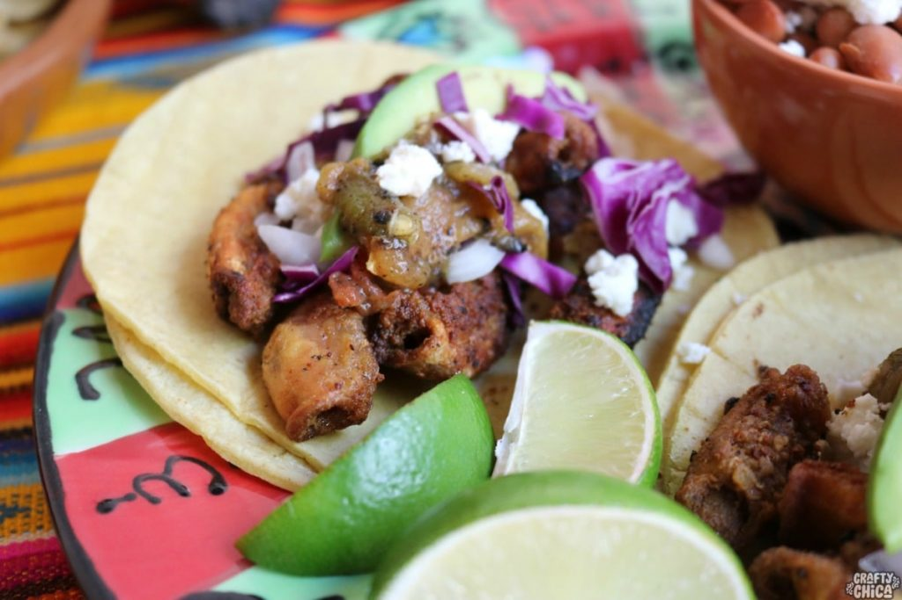

Tacos de Tripa
Home

Ingredients
- 2 kilos of beef casing, clean and without fat
- 1/2 onion, to cook the casing
- Enough salt, to cook the casing
- 1/4 onion, for sauce
- 3 tomatoes, for the sauce
- Enough grain salt, for sauce
- onion to taste, finely chopped, for tacos
- lemon juice to taste, for tacos
- sufficient amount of water, to cook the gut
- 1 head of garlic, in half, to cook the casing
- 4 tablespoons pork butter, to fry the casing
- 2 cloves garlic, for sauce
- 10 tree chili peppers, for sauce
- Enough corn tortillas, for tacos
- cilantro to taste, finely chopped, for the tacos
- Sidral Mundet® Flavor Apple to taste, to accompany
Instructions
- Place the clean beef casing in a pot, cover with water, add the onion, the garlic head and season with enough salt. Cover the pot and cook for 40 minutes; you can check if it is already cooked by introducing a fork and if it passes easily. Remove from the water and reserve. Chop the gut in small pictures.
- Boil: Place the tripas in a large pot and cover with water. Add the halved onion, head of garlic, bay leaves, and salt. Bring to a boil, then reduce the heat to a medium-low simmer. Cook for about 30–45 minutes until the tripas are tender.
- Dry: Remove the tripas from the water and pat completely dry with paper towels.
- Fry: Heat the lard or oil in a large skillet over medium-high heat. Add the tripas in small batches and fry until they are golden brown and crispy on the outside. Season generously with salt while cooking.
- Assemble: Place the crispy tripas onto doubled-up warm corn tortillas. Top with chopped onion, cilantro, and a generous squeeze of lime juice. Add your favorite salsa verde.